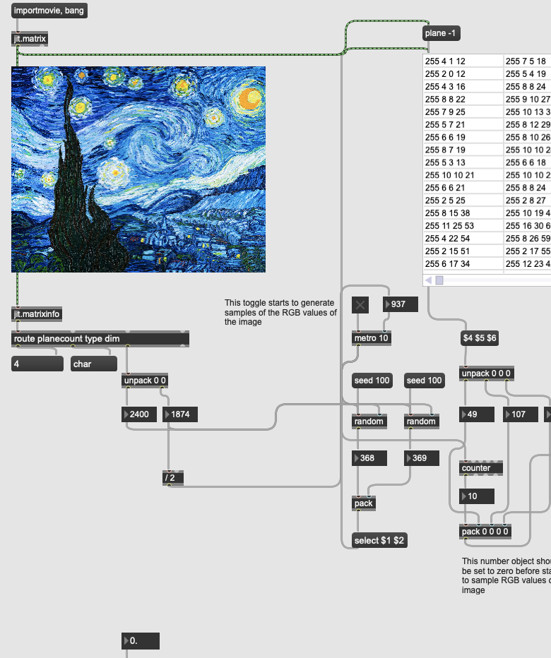

My name is Caitlin Hillery and I am a recent graduate from Purdue University in Acoustical Engineering with a minor
in Electrical and Computer Engineering. Through school and part-time work I have experience in sound,
acoustical, and basic electrical design. Two projects that I worked on in school and work at the
Purdue Envision Center initialized my interest in sound synthesis and procedural audio and is
something I hope to continue working with.